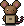
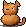
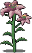
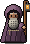
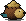

Привычки — это семена
Отметили маленькое дело — получили Семена жизни и осколки кристаллов. На них покупаются семена и пробуждается магия.
Бесплатно · без рекламы · без регистрации
Уютная пиксельная игра, в которой заброшенный сад оживает вместе с вашими привычками. Отмечайте маленькие дела — и в саду распускаются цветы, просыпаются жители и открываются новые тропы.
Android — файл APK, 3 МБ · iPhone — через Safari, как установить · или играйте в Telegram



Об игре
Не трекер с графиками, а тихое место, куда приятно возвращаться. Каждая отмеченная привычка — шаг к тому, чтобы оживить заброшенную усадьбу.
Отметили маленькое дело — получили Семена жизни и осколки кристаллов. На них покупаются семена и пробуждается магия.

Грядки, лилии размером с дерево, колодец и фонари — всё просыпается от вашей заботы, шаг за шагом.
Мыши-почтальоны, ёжик Шуршик, кошка Мята — у каждого своя история и маленькая просьба.

Старый садовник подскажет, с чего начать, и поведёт по саду через задания — заблудиться не получится.

Замки с символами, письма прежнего садовника и секреты, которые не подсвечены — их нужно найти самому.
Пропустили день — ничего не завянет и не сгорит. Сад просто подождёт, пока вы вернётесь.
Как играть
Выпить воды, прогуляться, почитать десять страниц — в месячном трекере, одним касанием.
Семена жизни и осколок кристалла цвета привычки. Сервер следит, чтобы всё было честно.
Сажайте цветы, выполняйте поручения жителей и открывайте новые места за калиткой.
Скриншоты
Установка
Прогресс хранится на сервере — играйте где удобно, сад один и тот же.
where-it-grows.apk.Без файла: «Играть» в Chrome → меню ⋮ → «Установить приложение».
Скачать APKВ других браузерах на iPhone установка не работает — только Safari.
ИгратьНичего ставить не нужно — работает везде, где есть Telegram.
Открыть ботаНаведите камеру телефона на код — откроется эта страница, и останется выбрать свой способ.
Вопросы
Нет. Сад заводится сам при первом запуске. Чтобы играть в один и тот же сад с разных устройств, в настройках игры нажмите «Привязать Telegram».
Да, полностью: без рекламы, подписок и покупок внутри игры.
На сервере игры, поэтому он не пропадёт при смене браузера. Если сад привязан к Telegram, его можно открыть с любого телефона.
В браузере и Telegram обновления приходят сами. APK обновите, скачав файл ещё раз и установив поверх — сад сохранится.
Так Android предупреждает о любом файле не из магазина. Игра не просит никаких разрешений, кроме интернета, а её исходный код открыт на GitHub.
Сервер сада живёт на бесплатном хостинге и после долгой тишины может просыпаться до минуты.